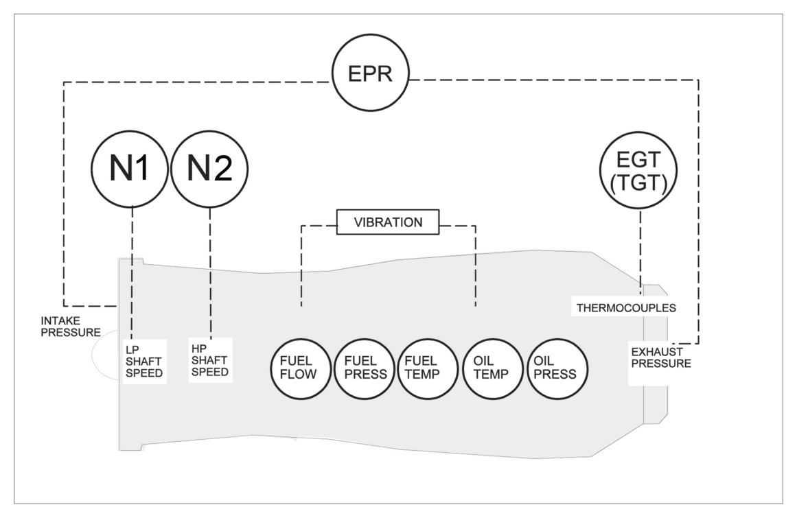
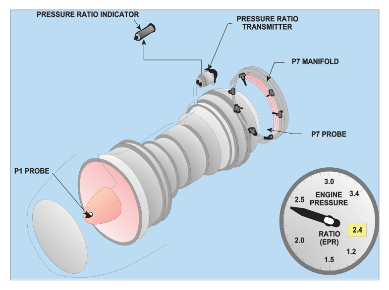

What this section covers: The two fundamental categories of engine instruments and the key parameters each type measures.
Engine instruments are divided into two fundamental categories:
Category
Function
Examples
Performance Indicators
Measure engine thrust/power output
EPR gauge, Fan Speed (N1) gauge, Torque meter
Engine Condition Indicators
Monitor engine health/serviceability
EGT gauge, Compressor Speed, Oil Pressure, Oil Temperature

Fig 38.1 — Parameters measured and sensor positions on a gas turbine engine (source p.515)
Exam Tip: EPR and N1 are Performance Indicators (thrust). EGT, N2, oil pressure/temperature are Condition Indicators. The distinction matters for exam questions asking which parameters indicate "thrust" versus "engine health."
2. Types of Display
What this section covers: Analogue vs. electronic display systems.
CRT or LCD panels with LED digital displays; flexible formatting
Both types convey essentially the same information, but the glass cockpit offers greater flexibility and is now the preferred means of displaying both flight and engine instrumentation. A small number of conventional gauges are retained in glass cockpit aircraft for backup in case of electronic display failure.
3. Thrust and Power Measuring Instruments
What this section covers: EPR, P7 gauge, integrated EPR, and torquemeter systems — construction and principles of operation.
3.1 Jet Pipe Pressure (P7) Gauge
Measures jet pipe (exhaust) pressure directly. Calibrated in inches of mercury (inHg), pounds per square inch (psi), or percentage of maximum thrust.
3.2 Engine Pressure Ratio (EPR) Gauge
Measures the ratio of jet pipe pressure to engine air intake pressure. This is the most common thrust indicator on turbofan engines.

Fig 38.2 — Engine Pressure Ratio (EPR) indicating system (source p.516)
EPR System Operation:
The electronic EPR system uses two transducers that sense the relevant pressures and vibrate at frequencies proportional to those pressures. A computer calculates the electrical signal appropriate to the pressures and sends it to the EPR gauge and to the engine management system.
On some large turbofan engines, an integrated EPR is produced by comparing the integrated turbine discharge pressure and fan outlet pressure against the compressor inlet pressure.
EPR — Apparent Drop on Take-off Run (CRITICAL EXAM TOPIC):
During the take-off roll, as forward airspeed increases, the engine intake pressure rises (ram effect). The jet pipe pressure is initially unaffected at low airspeed. Therefore the EPR ratio (jet pipe ÷ intake) FALLS — this is an apparent drop only, not a loss of thrust.
An inexperienced pilot may attempt to advance throttles further to restore EPR, risking exceedance of N1, N2, N3, and EGT limits.
Standard procedure: EPR must be set before approximately 60 knots — no increase in engine power is permitted after this speed (except in emergency).
After take-off, as airspeed increases beyond V2, the increased intake pressure is transmitted through the engine to the jet pipe, restoring the ratio to the take-off setting.
Worked Example — EPR apparent drop
Assume EPR is set to 1.60 at brake release (intake pressure P₁ = 14.7 psi, jet pipe P₇ = 23.5 psi → EPR = 1.60).
At 60 kt (ram effect): P₁ rises to 15.5 psi; P₇ initially unchanged at 23.5 psi → EPR = 23.5/15.5 = 1.516 (apparent fall).
The engine has NOT lost thrust — the ratio has changed due to the ram rise in intake pressure. Power must NOT be increased at this point.
3.3 Engine Torque (Turboprop/Turboshaft)
Turboprop and turboshaft engines produce torque, not direct jet thrust. Power = Torque × rpm.
Torque is measured between the engine and the reduction gearbox.
Method
Principle
Key Points
Oil Torquemeter
Axial thrust on helical gears balanced by engine oil pressure (up to 800 psi)
Oil pressure in cylinders counteracts axial gear load; pressure ∝ torque; bleed hole acts as feedback element
Electronic Torquemeter
Phase difference between two concentric shafts (Torque Shaft + Reference Shaft) using exciter wheels and EM pick-ups
AC voltage generated; phase displacement ∝ torque (shaft twist); lighter and more reliable
Torque indicator units vary by system: psi, inch/foot pounds, newton metres, BHP/SHP, or percentage of maximum. The indicator can show negative torque (windmilling propeller). On FADEC systems, limits can be digitally adjusted.
Memory Aid — Torque measurement location: Always measured between engine and reduction gearbox — this is where the torsional load is greatest and most representative of engine power output.
4. Engine RPM Measurement (Tachometers)
What this section covers: Three methods of measuring engine rotational speed; multi-spool designations; synchroscope.
The tachometer (tacho) measures engine rotational speed. For piston engines, it measures crankshaft speed. For gas turbines, it measures compressor speed. There are three basic methods:
4.1 Mechanical (Magnetic) Tachometer
Found on older piston aircraft. Uses a flexible drive shaft connected to a drag-cup indicator:
A magnet is driven by the engine via the flex drive
The rotating magnet induces eddy currents in an aluminium/copper drag-cup
The eddy currents create a torque pulling the drag-cup in the direction of magnet rotation
A hairspring opposes the motion; the equilibrium position moves the pointer
Temperature compensation devices are incorporated
4.2 Electrical Generator System (Tacho-Generator)
Possibly the oldest system still in use on large aircraft. Uses a small 3-phase tacho-generator driven by the engine. Output feeds an indicator with an asynchronous motor driving a drag-cup and pointer. Displays percentage of maximum engine speed or actual rpm.
Multi-spool Designations:
N1 — Low Pressure compressor spool speed
N2 — Intermediate Pressure compressor spool speed
N3 — High Pressure compressor spool speed
N1 and EPR are the primary parameters used to measure thrust in turbojets. The indicator displays percentage speed, with 100% corresponding to optimum turbine speed.
Overspeed Pointer (Trailing/Limit Pointer):
Fitted concentrically with the main pointer, initially at the maximum rpm graduation
If the main pointer exceeds the limit, the limit pointer is carried with it and stays at the maximum speed reached
When speed reduces, the limit pointer remains at the maximum recorded — this is a maintenance record
Reset: apply a separate 28V DC supply to a solenoid in the indicator
4.3 Inductive Probe (Speed Probe) System
Used where tacho-generators cannot be driven from intermediate or low-pressure shafts. A speed probe is positioned on the compressor casing aligned with a phonic wheel (toothed gear) or actual fan blades.
As the spool rotates, it alters magnetic flux in the probe
This changes the current in the probe coil
The frequency of change is directly proportional to spool speed
The frequency signal drives the indicator
Advantages: fewer moving parts; can provide multiple outputs (speed indication, engine start warning lamp, automatic power control, flight data acquisition).
4.4 Colour Coding on RPM Indicators
Colour
Meaning
Green
Normal operating range
Amber
Caution range
Red
Maximum or minimum speed; restricted (vibration) ranges
4.5 Synchroscope
On multi-engine aircraft, engine speed must be synchronised to reduce structural vibration and noise. The Synchroscope provides a qualitative indication of speed difference between engines:
One engine is designated master; others are slaves
Displays whether slave engines are running faster or slower than the master
Designed to operate from AC generated by the tachometer system
5. Temperature Sensing Equipment
What this section covers: The four types of temperature sensors, thermocouple operation, probe materials, and temperature measurement terminology.
Engine temperature ranges from −56°C to +1200°C. Four types of measuring devices are used:
flowchart LR
A[Temperature Measurement] --> B[Expansion Type e.g. mercury thermometer bimetallic strip]
A --> C[Vapour Pressure Type liquid-to-vapour state change pressure ∝ temp]
A --> D[Electrical Type Resistance bulb RTD Thermocouple Seebeck Effect]
A --> E[Radiation Type Pyrometry emissivity-based optical]
B --> F[Low temp Direct reading]
C --> F
D --> G[High temp Remote sensing]
E --> G
5.1 Thermocouple (Thermo-electric Type) — Most Important for Turbines
Two dissimilar metals joined at a junction produce a small voltage (thermo-EMF) proportional to the temperature at the junction — the Seebeck Effect.
Junction
Location
Role
Hot Junction
In the engine gas stream (the probe)
Senses temperature → generates EMF
Cold Junction
Cockpit engine instrument
Reference; EMF measured here on millivoltmeter
Industry Standard Thermocouple Materials:
Chromel (nickel chromium) — positive element
Alumel (nickel aluminium) — negative element
Selected for: ability to withstand very high temperatures AND a reasonable volts-per-degree ratio. Not the highest milli-voltage output available, but ideal combination of properties.
Parallel Connection of Probes: Multiple probes are connected in parallel around the periphery of the turbine/exhaust. This means:
The cockpit reads the average temperature of all probes
If one probe is damaged, the effect on the reading is minimal (slight drop)
A larger portion of the gas stream is sampled, improving accuracy
Critical — No External Power Needed: The thermocouple system requires NO power supply to indicate temperature (the probe generates its own EMF). However, if the signal is to feed a temperature limiting system, the voltage will need to be amplified (using the aircraft's electrical system). In combined systems, the probes contain TWO hot junctions: one for the limiter, one for the indicator.
5.2 Temperature Probe Locations and Terminology
Abbreviation
Full Name
Position
TIT
Turbine Inlet Temperature
Before the turbine
TET
Turbine Entry Temperature
Before the turbine
TGT
Turbine Gas Temperature
Inside the turbine
EGT
Exhaust Gas Temperature
After the turbine
JPT
Jet Pipe Temperature
Combined with P7 pitot probes
Probe position depends on the material's ability to withstand the temperature encountered. TIT/TET locations have the highest temperatures; EGT probes are downstream where temperatures are lower and metal endurance is sufficient.
5.3 Air Temperature — SAT, RAT, TAT
Term
Definition
Notes
SAT
Static Air Temperature
True static condition; what performance data requires
RAT
Ram Air Temperature
SAT + ram rise (due to adiabatic compression + skin friction at speed)
TAT
Total Air Temperature
SAT + full ram rise; probes have ~100% recovery factor; used at high Mach numbers
Recovery Factor: A sensor's ability to detect the temperature rise due to ram effect, expressed as a percentage. If recovery factor = 0.80, the sensor reads SAT + 80% of ram rise. TAT probes approach 100% recovery factor.
6. Pressure Gauges
What this section covers: Elastic pressure sensing elements — diaphragms, capsules, bellows, and Bourdon tubes; remote indicating systems.
Pressure = force per unit area. Common units: psi, inHg, bar (1 bar = 14.5 psi), pascal (1 bar = 100,000 Pa). Pressure gauges measure gauge pressure (difference between absolute and atmospheric pressure).
Elastic Pressure Sensing Elements
Element
Construction
Pressure Range
Application
Diaphragm
Corrugated circular metal disc, secured at edge
Low pressure
General low-pressure sensing
Capsule (Aneroid)
Two diaphragms sealed together — sealed chamber (aneroid) or open (pressure capsule)
C-shaped tube with elliptical cross-section; free end sealed; applied pressure straightens the tube
Higher pressures
Engine oil pressure
MAP Gauge (Manifold Absolute Pressure): Piston engine gauge that reads absolute pressure — calibrated in inHg. Under standard conditions reads 30 inHg (called Static Boost). Earlier versions were "Boost Gauges" calibrated in psi. Can read less than atmospheric pressure when the engine is running (throttled back). Note: reads absolute pressure, not gauge pressure.
Remote Indicating Pressure Systems
Where it would be impractical to run fluid pipelines to the cockpit (e.g., outer engine of a B747), remote indicating systems are used:
A transmitter at the pressure source
An indicator (receiver) on the cockpit panel
Can be AC or DC operated
Advantage: hazardous fluids (e.g., engine oil, hydraulic fluid) need not be piped into the cockpit
Saves weight by reducing pipeline length
7. Engine Vibration Monitoring
What this section covers: Vibration Monitoring Equipment (VME) — sensors, principles, and display.
Vibration Monitoring Equipment (VME) is fitted to almost all commercial jet aircraft. Gas turbines have very low inherent vibration; any increase is indicative of damage that may lead to failure.
Sensor Types
Sensor
Principle
Piezoelectric crystal
Crystal generates electrical charge when mechanically stressed by vibration
Moving coil / magnet
Loosely mounted magnet moves within a fixed coil; relative motion generates a signal
VME Operation
Both sensor types are suspended within a fixed coil carrying 115 volts at 400 Hz. The sensor moves in sympathy with engine vibration. The signal is:
Filtered: only frequencies indicative of damage pass through (normal engine frequencies are erased)
Amplified by the amplifier
Rectified and sent to the vibration indicator
Vibration is measured and displayed in Relative Amplitude (Rel Ampl). If vibration exceeds a predetermined threshold, a warning light illuminates on the instrument.
Monitoring Precision: Modern engine VME can identify the vibration level of each rotating assembly individually, allowing pinpointing of the vibration source. Warnings are provided in the cockpit if vibration limits are exceeded; some systems provide continuous readout.
8. Fuel Quantity and Flow Measurement
What this section covers: Float systems (volume), capacitance systems (mass), fuel flowmeters, and integrated flowmeters.
8.1 Volume vs. Mass Measurement
Method
Units
Application
Limitation
Volume measurement
Gallons/litres
Light aircraft only
Does not account for density changes with temperature
Mass measurement
kg or lb
All commercial aircraft
More complex system required
8.2 Float System (DC Volume)
A float rests on the fuel surface. Its movement repositions a wiper on a variable resistor, altering current to a cockpit indicator. Simple but has two significant errors:
Fuel tanks are rarely symmetrical — float level is not a true measure of quantity
Errors occur during manoeuvres as attitude changes affect float position
The gauge is set to be accurate only at the low and empty positions.
8.3 Capacitance Fuel Gauge System
The standard system on commercial aircraft. Measures mass using the relationship between fuel level (dielectric permittivity) and capacitance.
Capacitance Formula:
C = Er × (A / D)
Where:
C = Capacitance (farads; typically picofarads, 10⁻¹² F)
Er = Relative Permittivity of the dielectric (fuel or air)
A = Area of plates (constant)
D = Distance between plates (constant)
Since A and D are fixed, capacitance varies only with Er — which changes as the ratio of fuel to air in the tank changes.
Typical Dielectric Values
Material
Relative Permittivity (Er)
Vacuum / Air
1.0 / 1.0006
Gasolene
1.95
Kerosene
2.10
Distilled Water
81.00
Impure Water
0 (effectively shorts capacitor)
Water Contamination Warning: If water is present in fuel tanks, it effectively shorts the sensing capacitors. The indicator is driven beyond full scale — a dangerously misleading reading. A red arc must be marked on the indicator extending from calibrated zero to the lowest readable indication in flight, if unusable fuel exceeds 1 gallon or 5% of tank capacity (whichever is greater).
Reference Unit and Temperature Compensation
A Reference Unit is always submerged in the unusable fuel to improve accuracy when permittivity changes from normal
A Compensating Capacitor corrects for temperature-induced changes in fuel density and Er, allowing the system to indicate mass rather than volume
The system senses changes in Specific Gravity (SG) to indicate mass
Fail-Safe and Test Features
On failure: indicator slowly drives to zero (fail-safe)
A test circuit simulates tank emptying; on release, pointer returns to original position
A Fuel Totalizer can display the sum of all tank gauges
8.4 Fuel Flowmeter
Measures instantaneous fuel consumption rate. Units: volume flow (gallons/hr or litres/hr) or mass flow (lb/hr or kg/hr).
Modern flowmeter uses an electrical sensor with a helical vane impeller containing an embedded magnet. Fuel flow rotates the impeller → pick-off coil generates a sinusoidal signal at frequency proportional to volume flow rate. Temperature correction converts this to mass flow.
The flowmeter is located in the high-pressure fuel line to the burners. An Integrated Flowmeter displays both fuel flow rate and total fuel consumed (rate integrated over time).
9. Remote Signal Transmission & Flight Hour Meter
What this section covers: Remote position indicating systems and the flight hour meter.
Remote indicating systems are used to indicate the position of valves, flaps, or levers on engines to the cockpit. Each system comprises:
A Transmitter at the source position to be measured
A Receiver (indicator) on the appropriate cockpit panel
Can be AC or DC operated
Flight Hour Meter
Records engine and systems usage time. Activated automatically via the weight-on-wheels switch or (more commonly) an airspeed switch.
Thermocouple: Chromel/Alumel. Hot junction in gas stream, cold junction at cockpit. Parallel probes → average reading. No external power for indication.
Temperature: SAT → RAT → TAT (TAT = SAT + full ram rise, ~100% recovery factor).
VME: Piezo or magnet/coil sensor. Filter → amplifier → rectifier → display in Rel Ampl.
Capacitance fuel gauge: C = Er × A/D. Water → reads beyond full scale. Reference unit always submerged. Fail-safe = drives to zero.
Practice Questions & Detailed Answers
Note: Chapter 38 has no dedicated source question bank. The following questions are instructor-generated in DGCA CPL/ATPL style, covering all major topics of this chapter.
Q1.Which of the following are classified as "Performance Indicators" on a turbofan engine?
EGT and N2
Oil pressure and oil temperature
EPR and N1 (fan speed)
Vibration level and fuel flow
Correct Answer: (c) EPR and N1 (fan speed)
Explanation: Performance Indicators measure thrust output. The two primary performance indicators on turbofan engines are EPR (Engine Pressure Ratio) and N1 (fan speed). The text states: "N1 and EPR are the parameters used to measure thrust in turbojets." See Section 1.
Why the other options are wrong:
(a) — EGT and N2 are Engine Condition Indicators (health monitoring), not performance/thrust indicators.
(b) — Oil pressure and temperature are Condition Indicators.
(d) — Vibration level and fuel flow are condition/monitoring parameters, not primary thrust indicators.
Instructor's Note: For turboprops, the performance indicator is the Torquemeter (since turboprops produce power/torque, not direct jet thrust). Always distinguish between the engine type when identifying the primary thrust/power instrument.
Q2.During the take-off roll, an EPR gauge indicates a reading lower than the value set at brake release. The most likely cause is:
A genuine loss of engine thrust — throttles should be advanced to restore EPR
An apparent drop caused by ram rise in engine intake pressure with increasing airspeed
An instrument malfunction requiring abort of the take-off
Atmospheric pressure change during the take-off roll
Correct Answer: (b) An apparent drop caused by ram rise in engine intake pressure with increasing airspeed
Explanation: As the aircraft accelerates on the runway, forward airspeed causes a relative increase in engine intake pressure (ram effect). Jet pipe pressure is initially unaffected. Therefore EPR (jet pipe ÷ intake) falls — this is an apparent drop only. Standard procedure: EPR must be set before 60 kt — no increase in power after that speed except in emergency. See Section 3.
Why the other options are wrong:
(a) — Advancing throttles would risk exceeding N1/EGT limits without genuine benefit; the EPR drop is NOT a real thrust loss.
(c) — This is normal and expected behaviour; it is not a malfunction.
(d) — Atmospheric pressure does not change significantly during a take-off roll.
Instructor's Note: This is one of the most important exam topics in engine instrumentation. The trap answer is (a). The safe action is to set EPR before 60 kt and monitor other parameters (N1, N2, EGT) for trend. Never advance throttles based on EPR alone after 60 kt.
Q3.The thermocouple temperature system used in gas turbine engines requires:
An external power supply to generate the EMF at the hot junction
No external power for temperature indication; the thermocouple generates its own EMF
AC power at 115V/400Hz to energise the measuring circuit
28V DC power supply to the hot junction probes
Correct Answer: (b) No external power for temperature indication; the thermocouple generates its own EMF
Explanation: The source text states: "Note: The system requires no power supply to indicate temperature." The hot junction (in the gas stream) generates a millivoltage proportional to temperature via the Seebeck effect — no external power is needed for this. However, if the signal must feed a temperature limiting system (which requires amplification), the aircraft's electrical system is then used. See Section 5.
Why the other options are wrong:
(a) — The thermocouple probe is self-generating; it does not receive power.
(c) — 115V/400Hz is associated with VME (vibration monitoring), not thermocouple indicating.
(d) — 28V DC is associated with the overspeed pointer reset solenoid in tachometers, not thermocouple systems.
Instructor's Note: This is a frequently tested fact. Thermocouples are self-generating (Seebeck effect). The millivoltmeter/galvanometer in the cockpit measures the tiny voltage — no power input required. Power IS required for the temperature limiting (top temperature control) function.
Q4.In a capacitance fuel gauge system, what is the effect of water contamination in the fuel tank?
The indicator reads zero, indicating an empty tank
The system automatically compensates and indicates the correct fuel quantity
The capacitors are effectively shorted, driving the indicator beyond full scale
The indicator fluctuates rapidly between empty and full
Correct Answer: (c) The capacitors are effectively shorted, driving the indicator beyond full scale
Explanation: Water has a relative permittivity (Er) of ~81 (distilled) or even higher (impure), compared to kerosene at 2.10. Water's extremely high dielectric value effectively shorts the capacitors in the sensing units. The resulting anomalously high capacitance drives the indicator beyond full scale — a dangerously misleading overread. See Section 8.
Why the other options are wrong:
(a) — Zero indication is the system's fail-safe response to a fault, not a water response.
(b) — The system cannot compensate for water; the reference unit only compensates for fuel permittivity/temperature variation.
(d) — Random fluctuation is not the described failure mode; water causes a consistent over-reading.
Instructor's Note: Water contamination causes an over-reading (beyond full scale) — this is a critical safety fact. Fuel drains and checks before flight detect and drain accumulated water from tank sumps. This is a mandatory pre-flight check.
Q5.Which pressure sensing element is most suitable for measuring high pressures such as engine oil pressure?
Aneroid capsule
Corrugated diaphragm
Bellows
Bourdon tube
Correct Answer: (d) Bourdon tube
Explanation: The Bourdon tube is specifically described as "normally associated with higher pressures such as engine oil pressure." It is a C-shaped metal tube with an elliptical cross-section; applied pressure tends to straighten the tube, driving an indicator pointer. It is manufactured to handle high pressure ranges. See Section 6.
Why the other options are wrong:
(a) — Aneroid capsule is a sealed (evacuated) capsule used to measure low pressures (e.g., altitude).
(b) — Corrugated diaphragm is used for low pressures.
(c) — Bellows can measure high, low, or differential pressures, but are specifically cited for LP booster pump output — not the primary high-pressure element.
Instructor's Note: Remember: Diaphragm/Capsule = Low. Bourdon = High. Bellows = Variable. This is a classic DGCA pattern-matching question. The Bourdon tube is the oldest pressure sensing element and the primary one for high-pressure systems.
Q6.Total Air Temperature (TAT) is related to Static Air Temperature (SAT) as follows:
TAT = SAT − ram rise
TAT = SAT (they are identical in level flight)
TAT = SAT + full ram rise (approximately 100% recovery factor)
TAT = SAT + 80% of ram rise at all times
Correct Answer: (c) TAT = SAT + full ram rise (approximately 100% recovery factor)
Explanation: The text states: "For use at high Mach numbers, Total Air Temperature (TAT) is measured. The air is brought to rest (or nearly so) without addition or removal of heat. The temperature probes used have a high recovery factor (approximately 100%). TAT is equal to SAT + Ram Rise." See Section 5.
Why the other options are wrong:
(a) — Ram rise is positive (adds to SAT), not subtracted.
(b) — Above Mach 0.2, friction and adiabatic compression raise air temperature above SAT.
(d) — 80% recovery factor applies to a specific sensor type, not to TAT by definition. TAT by definition has ~100% recovery.
Instructor's Note: TAT = SAT + ram rise. For OAT (Outside Air Temperature) use on an aircraft cruise display, TAT is measured and then corrected to SAT using Mach number. The ADC performs this correction automatically. Below Mach 0.2, SAT ≈ RAT ≈ TAT.
Master Reference Tables
Numerical Values — Quick Reference
Parameter
Value
Section
P7 gauge calibration units
inHg, psi, or % max thrust
3
EPR set before this speed on take-off
60 knots
3
Oil torquemeter max pressure
800 psi
3
Gas turbine speed display
100% = optimum turbine speed
4
Overspeed pointer reset supply
28V DC
4
VME coil supply voltage/freq
115V / 400Hz
7
Engine temp range monitored
−56°C to +1200°C
5
TAT recovery factor
~100%
5
Er — Air
1.0006
8
Er — Kerosene
2.10
8
Er — Gasolene
1.95
8
Er — Distilled water
81.00
8
Red arc on fuel gauge required if unusable fuel exceeds